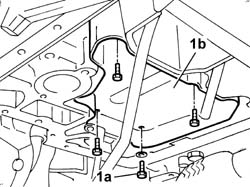
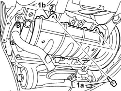

1020A46 OIL SUMP BULKHEAD - R R
- Path
- Procedures > 10 ENGINE > 1020 CRANKCASE SUMP AND COVERS > 1020A CRANKCASE OIL SUMP > 1020A46 OIL SUMP BULKHEAD - R R
- Kind
- repair procedure (removal / refitting; the operation number is the code)
- Applies to
- engines: 2.0 16v, 3.0 24V V6; all production periods
- Interactive page
- https://sloeber94.github.io/elrnDB-fUlss/en/#/179006896
Applies to: engines: 3.0 24V V6; all production periods
 Removing
Removing
 Refitting
Refitting- Position the vehicle on the lift.
Op. 7055B54 UNDER-ENGINE GUARD - R R
Op. 1020A10 CRANKCASE SUMP - R&R AND REPLACE GASKET
See in Op. 1084B28
1. Undo the fixing bolts (1a) and remove the partition (1b).

Applies to: engines: 3.0 24V V6; all production periods
Refitting
Removing- Position the partition and tighten the fixing bolts to the recommended torque.
 | Value - daNm | Fastening | Component | Ø |
|---|---|---|---|---|
. | 0.8 | Bolts | CRANKCASE OIL SUMP PARTITION | - |
See in Op. 1084B28
Op. 1020A10 CRANKCASE SUMP - R&R AND REPLACE GASKET
Op. 7055B54 UNDER-ENGINE GUARD - R R
Op. 0010T11 ENGINE OIL CHECK LEVEL AND TOP UP
- Remove the vehicle from the lift.
Applies to: engines: 2.0 16v; all production periods
Removing
Refitting1. Undo the fixing bolts (1a) and remove the partition (1b).

Applies to: engines: 2.0 16v; all production periods
Refitting
Removing- Place the partition in position and tighten the fixing bolts.